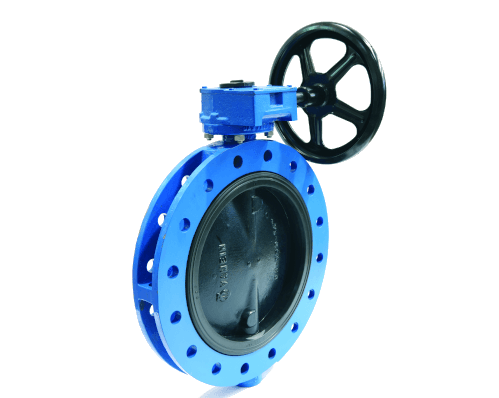
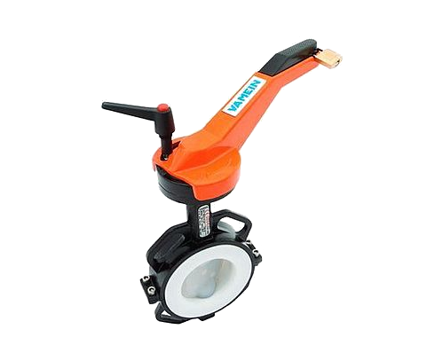
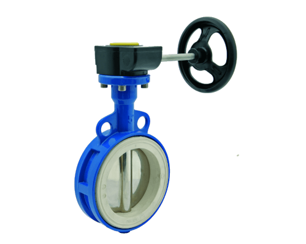

Butterfly Valves
UK Distributor for Vamein Valves
IPT Engineering are delighted to be the UK distributor of Vamein range of Butterfly Valves.
Vamein Butterfly valves are quarter turn assemblies that can be used in either on/off applications or as modulating devices to regulate flow.
With a wide range of Rubber seating options in wafer, lugged & flanged designs, standard valves are available with nominal diameters from 50mm (2”) up to 1200mm (48”), and PTFE seated valves available in wafer type with nominal diameters from 50mm (2”) up to 300mm (12”); all with working pressures of up to 16 bar (230psi), with an operating temperature range from -40°C (-40°F) to 180°C (356°F).
The unique design and high-quality manufacture ensures a very low pressure drop through the valve meaning that extreme low torque is required for operation.
With only the disc and liner in contact with the fluid, and the high tolerance manufacturing methods employed, all components within the valve are interchangeable.
Each valve was designed in compliance with API 609 and all processes are certified according to ISO9001:2015. Additionally, every valve component is also marked with a manufacturing code number ensuring that complete traceability of the materials and manufacture is available for every valve produced.
The valves meet the requirements of the Pressure Equipment Directive 2014/68/EU and are also the European Directive ATEX 2014/34/EU for use on systems and equipment used in explosive atmospheres.
Alternatively, the valves can be supplied with either lever operation, handwheel operation or fully automated via actuators, including the Beck range of drives.
Suitable for a wide range of applications in heavy industry, energy, shipbuilding through to water and sewage treatment and the food industry , we can provide a valve for your needs.
For more information please Contact Us.


